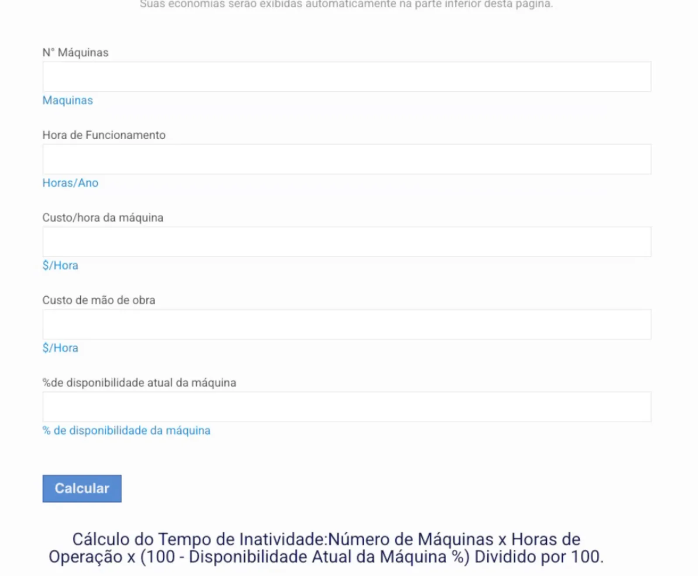
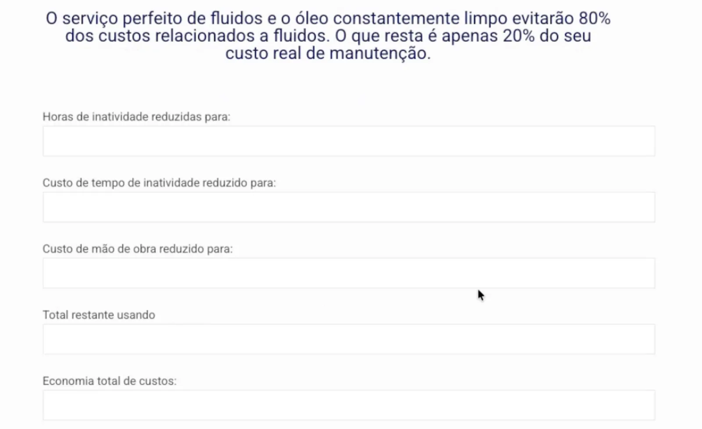
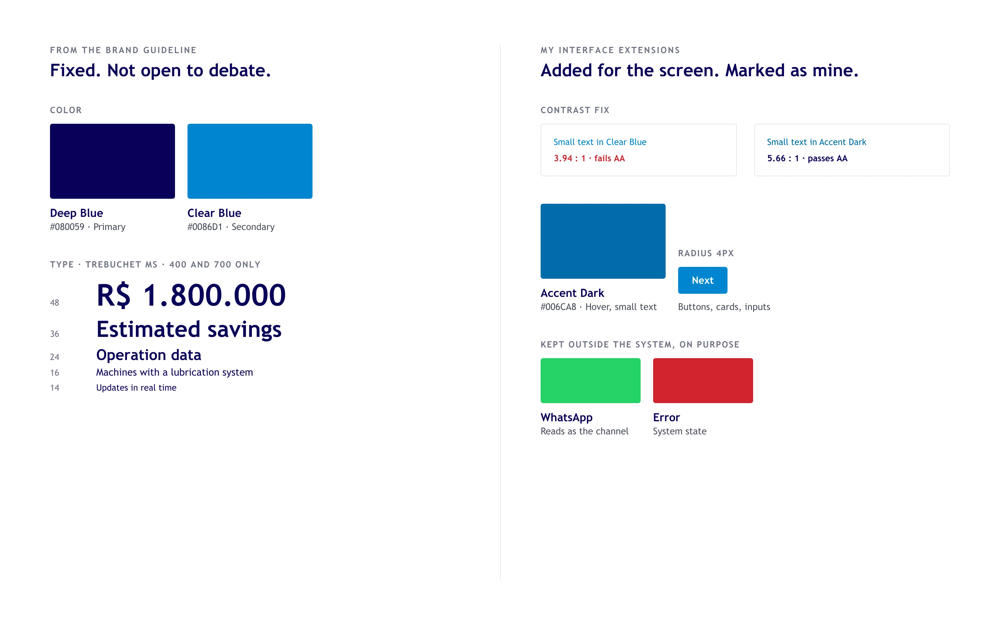
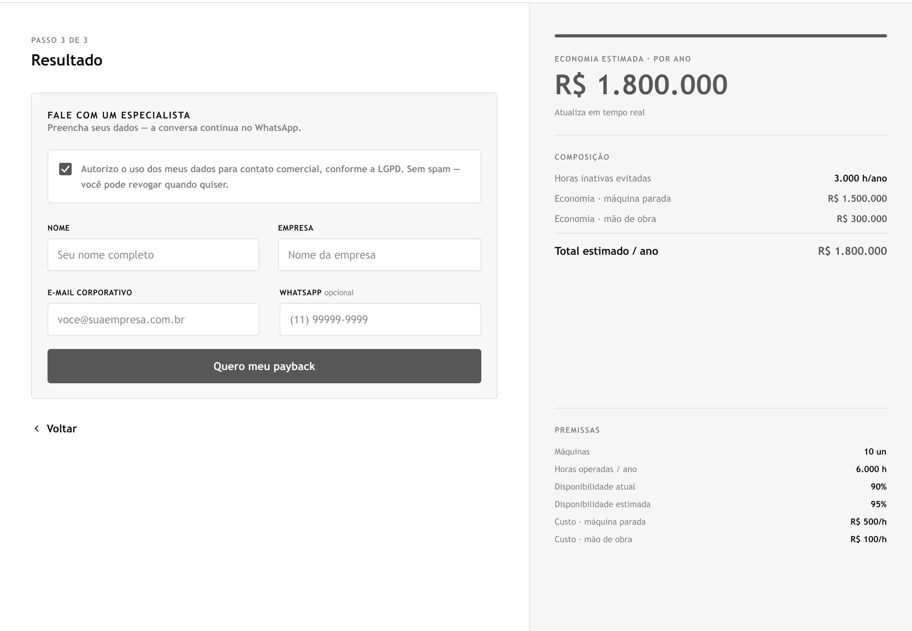
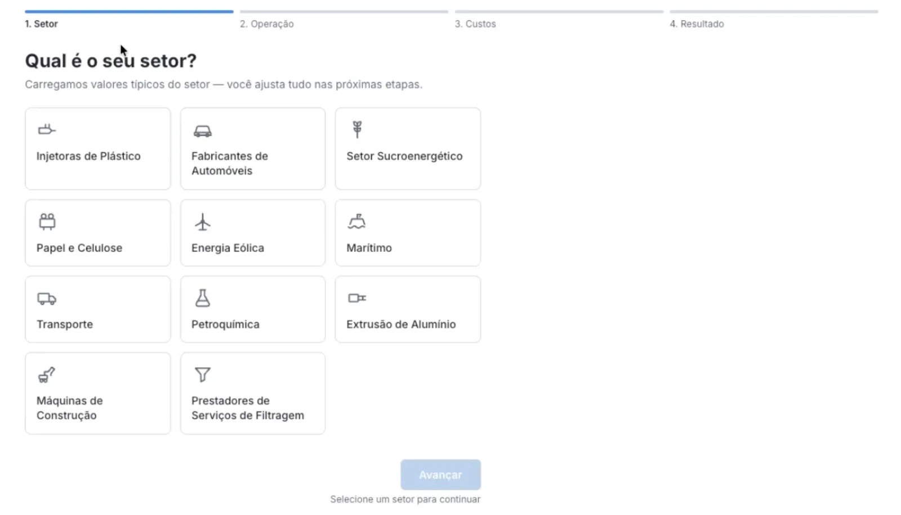
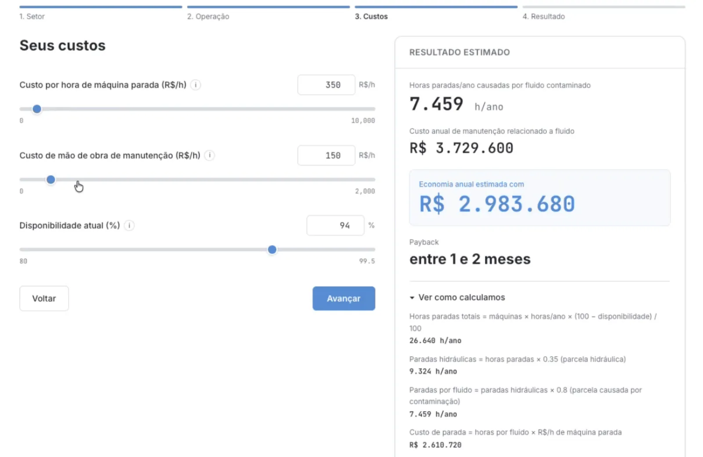
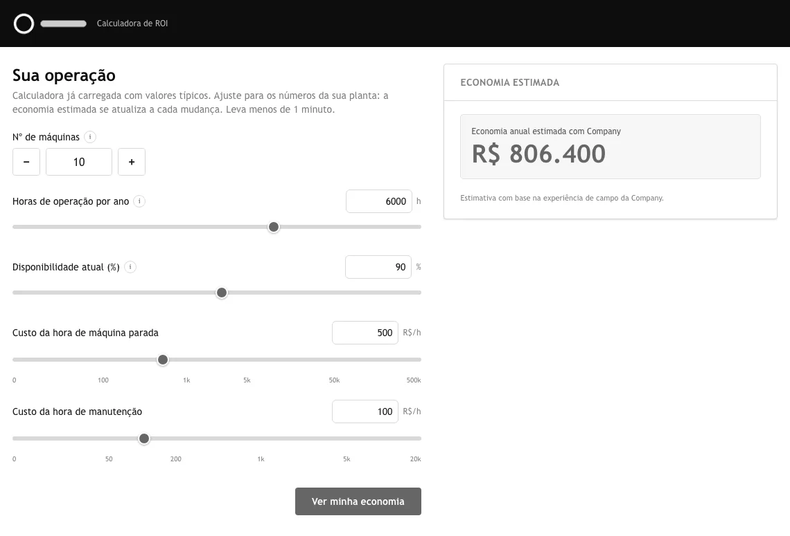
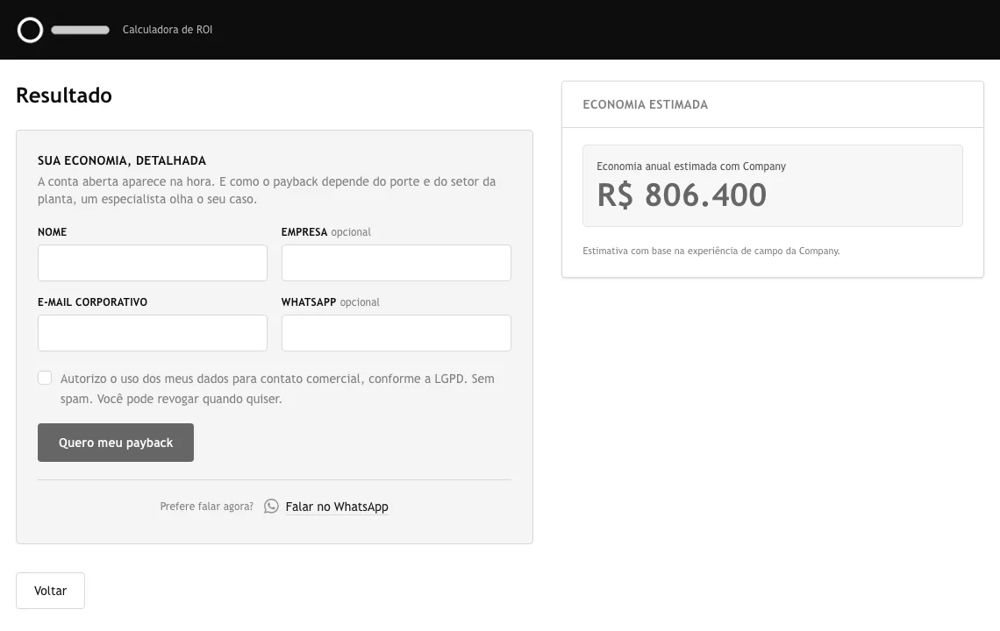
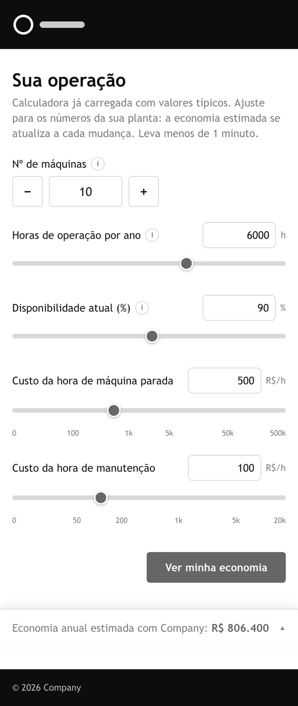
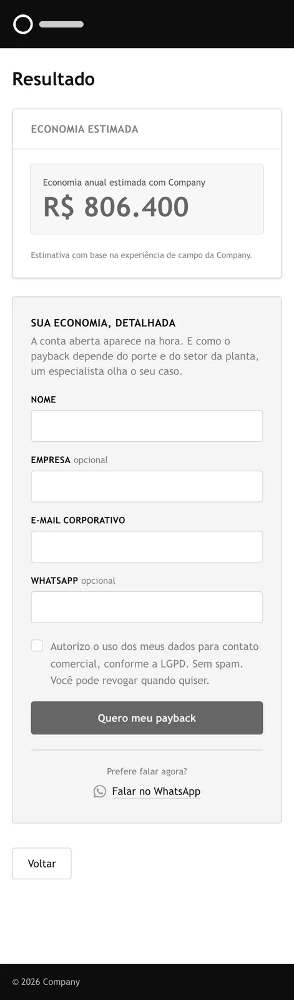

An industrial equipment company's ROI calculator returned wrong numbers. In my test run, R$ −1,108,800 in savings. The math was right. The sign was inverted.
The brief I was handed: rebuild the calculator.
The brief I shipped: where the lead gets lost, and what to build there.
The Problem
The calculator existed to show savings. It showed wrong numbers, sometimes a loss. Sales knew it was broken. Nobody knew what it was costing them, because nothing was measured.
Before


Original interface in Portuguese.
Five inputs, a Calculate button, then twelve output fields. The savings figure came last, and came out negative.
Recreated from the diagnosis. The figure the old calculator showed.
Diagnosis
With access to their WordPress, I sent them what to fix. Two things came out of it: the calculator built outside WordPress, and analytics where there were none.
System
Guideline values and my interface additions kept in separate layers, packaged as a Claude skill. The brand blue failed AA for small text, so a darker shade took over there.

Guideline on the left, my extensions on the right.
Build
Five versions of the flow, left to right. Click to open full size.

The Figma side. Its result panel and form made it into the final version.
Iteration
The first version opened with a sector picker, so results could start from typical values. In the first review, we cut it. Every extra choice was one more reason to leave before seeing the number.


First version: four steps, starting with the sector.
The analytics from the diagnosis made this possible: GA4 through GTM, my own event names.
Then I measured. Of the first 27 people who opened it, 15 left on the first screen, before seeing any number. On mobile, 10 of 15. So I moved the result up front and the form after. Three steps became two.
First weeks live. Small sample, real numbers.




The calculator today: two steps, desktop and mobile. Brand removed, shown in grayscale.
What Happened
The client moved the calculator off the homepage, into a Tools link next to another tool they built. Later they added a quote request to their WordPress site, with another vendor.
The Real Deliverable
I was asked for a calculator. I proposed a way to ask for a quote.
That's what the client added next.